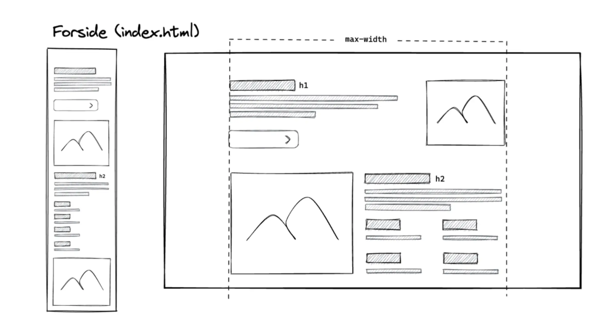
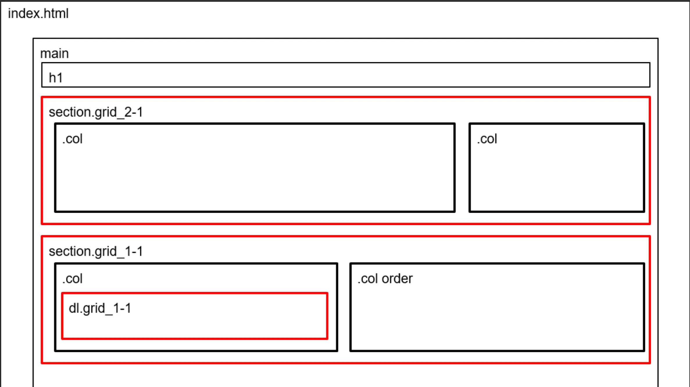

-
I gundlæggennde web fik vi undervisning om de centrale principper indenfor desdign.
Designprocessen bestod af designkonventioner,gestaltprincipper,wireframes,
og styletile samt fonte og tekstopsætning. - Kodeprocesen bestod af “mobilefirst”tilgang.
Vi arbejede med css grid,flex og mediaqueries.
Begrebet responsivt website betød det skulle fungere på alle skærme.
Der blev udleveret tekst,billeder,wireframe,farver og typografi til opgaven.
GRUNDLÆGGENDE WEB
- Burgergrænseflader | praksisnære principper og metoder til design af brugergrænseflader.
- Forretning | multimediedesignernes roller i serhvervets praksis og en forståelse af immaterielle rettigheder og licenseringsmetoder.
- Teknologi | Teknologier med relevans for brugergrænseflader og digital medieproduktion.
- Værktøjer vi benyttede | Visual Studio Code med relevante plug-ins, File Zilla, HTML-validering, CSS-validering, Firefox / Chrome developer tools.
I Tema grundlæggende Web bestod opgaven i at bruge
de udleveret wireframes,
layoutdiagrammer
samt
tekst og billeder.
Der
blev undervist i designelementer og konventioner som skulle bruges
i opgaven.
I projektet var selve design, farver og diverse vores eget valgt.
Opgaven gik ud på at det skulle være vores studiestartsprøve.
I dette Tema var jeg helt ny
til
mange af de grundlæggende
kodeelementer,
som derfor skulle læres - hvilket var ideen med denne opgave.
I mit design valgte jeg at gå med nogle mørkere farver da jeg gerne ville
fremme farver i
billederne. Derved brugte jeg
en typografi som var Sans Serif
fordi teksten var kort de fleste steder.
Det sværeste ved denne opgave var at se hvordan selve Grid
i koden fungerede og at forstår
hvordan man læser et
wireframe diagram.
I Denne opgave brugte vi meget hinanden,
hvilket var en god
læringsproces i
at forklare hvad man
havde lært til andre.
Vores website skulle uploades i vores eget domæne i File Zilla.

